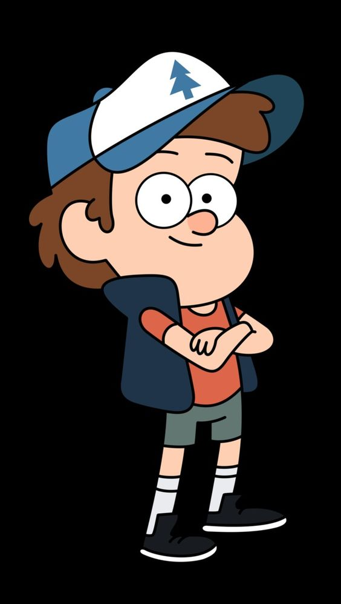

Dipper é o mais racional dos irmãos Pine. Ele costuma liderar as expedições sobrenaturais, onde sua curiosidade natural e inteligência acima do comum vem a calhar. Está sempre tentando cuidar de sua irmã e apesar de brigarem bastante. Seu símbolo é o pinheiro.